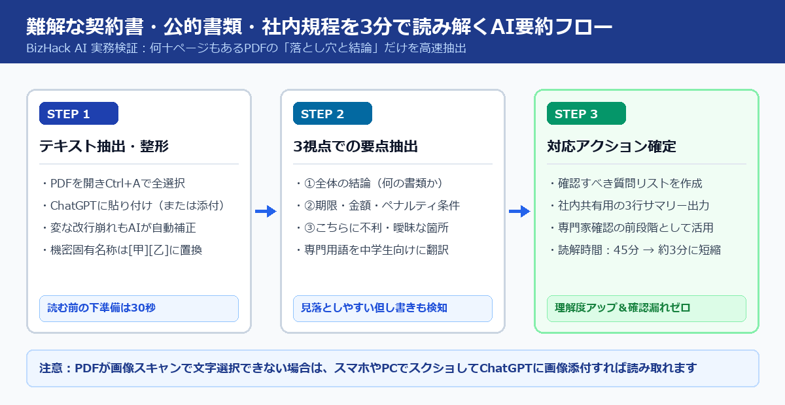

総務・法務・経理・管理部門の現場では、数十ページに及ぶ公的機関の補助金要綱、法改正の通達PDF、取引先の契約書案、あるいは分厚い社内規程を読み解く業務が日常的に発生します。
「お役所特有の回りくどい言い回しで頭に入ってこない」「どこが前回から改定されたのか探すだけで半日が消える」「重要事項を見落として後でトラブルになるのが怖い」と頭を抱えていませんか？
本記事では、難解なPDFや長文規程をChatGPTに読み込ませ、わずか3分で「中学生でもわかる平易な日本語の要点」と「自社にとってのリスク・対応すべきToDo」を抽出する実践プロンプト術を完全公開します。
1. 「お堅い長文PDF」を読むだけで半日潰れていませんか？
公的文書や契約書を読むのに膨大な時間がかかる理由は、文章が長いからだけではありません。実務担当者を悩ませているのは、主に次の3つの壁です。
- 定義と例外が入れ子になっている：「第〇条第〇項に規定する〜を除く」といった参照が多く、前後を行き来しているうちに主旨を見失う。
- 結論が後ろに書かれている：自社に適用される条件や提出期限などの肝心な情報が、前置きや背景説明の後に埋もれている。
- 専門用語・条文表現の翻訳負荷：漢字ばかりの法律用語や行政用語を「結局、現場は何をすればいいのか？」という実務アクションに脳内変換するだけで疲弊する。
人間が1ページ目から順番に精読しようとすると数時間かかりますが、ChatGPTに「構造化」と「噛み砕き」を先に任せることで、人間は「判断と最終確認」だけに集中できるようになります。

2. なぜChatGPTを使うと難解文書が3分で頭に入るのか？
ChatGPTをはじめとする大規模言語モデル（LLM）は、長文の中から「前提条件・対象者・禁止事項・期限・数値」を抽出し、別の表現（中学生レベルの平易な日本語や箇条書きの表）へ変換する作業を極めて得意としています。
重要なのは、単に「要約して」と丸投げしないことです。「要約して」だけだと表面的なあらすじしか返ってきません。「誰が」「何のために」「どの観点（コスト・期限・リスク）で読むのか」を指定してあげることで、実務でそのまま使える精度の高い骨子リストが一発で出力されます。
3. 【即コピペOK】難解文書を一発で噛み砕く神プロンプト3選
ここからは、総務・法務・事務の現場でそのまま使える3つの実践プロンプトを紹介します。PDFのテキストをコピーして貼り付けるか、ChatGPTのファイル添付機能でPDFをアップロードして実行してください。
あなたは企業の総務・法務に精通した実務アドバイザーです。 以下の公的文書（または社内規程）を読み込み、多忙な実務担当者が3分で全体像とやるべきことを把握できるよう、以下の構成で整理してください。 ■ 出力フォーマット： 1. 【一言でいうと】この文書は結局何についての文書か（50文字以内） 2. 【対象者と適用条件】誰が・どのような場合に該当するか（箇条書き） 3. 【必ずやるべきToDoと期限】申請・提出・対応が必要な項目と締切日 4. 【禁止事項・注意点】違反した場合のペナルティや見落としやすい例外 5. 【中学生向けの超平易解説】専門用語を使わずに3行で説明 ■ ルール： ・文書に書かれていない推測は書かず、「記載なし」と明記してください。 ・重要な数値・日付・金額は【太字】で強調してください。 ■ 対象文書： [ここにPDFからコピーした文章を貼り付け、またはファイルを添付]
あなたは企業法務のリーガルチェック担当者です。 以下の契約書（または利用規約）案を「受注側（または自社）」の立場から精査し、不利になり得る条項や曖昧な表現をリストアップしてください。 ■ チェックしてほしい観点： 1. 損害賠償責任の上限設定の有無（無制限になっていないか） 2. 知的財産権・成果物の帰属先 3. 契約解除条件・中途解約時の違約金 4. 検収期間・支払サイトの妥当性 5. 秘密保持義務の期間と範囲 ■ 出力形式： ・該当条文（第〇条） ・リスクの内容（なぜ自社に不利なのか） ・相手方への修正提案フレーズの案（角が立たないビジネス表現） ※ 会社名や個人名などの固有名詞は [A社] のように伏せ字にしています。 ■ 対象条文： [ここに契約書のテキストを貼り付け]
以下の「旧規程」と「新規程」を比較し、変更されたポイントだけを抽出してください。 その上で、全社員向けに一斉送信する「規程改定のお知らせメール」のドラフトを作成してください。 ■ 出力内容： 1. 【新旧比較表】変更箇所・変更前・変更後・実務への影響（Markdown表形式） 2. 【社内周知メール案】件名＋本文（結論ファースト、社員が今日から気をつけるべき行動を3点に絞って明記） ■ 旧規程： [ここに旧バージョンのテキスト] ■ 新規程： [ここに新バージョンのテキスト]
4. 読者モニター検証メモ（40代総務・法務兼任担当の実証）
BizHack AI 専属読者モニターの佐々木さん（40代・総務法務兼任）に、実際の社内規程改定と取引先からの業務委託契約書案を使って本プロンプトを検証してもらいました。
- PDFの改行崩れは気にせずそのまま貼ってOK：PDFから文字をコピーすると変な位置で改行が入りますが、整形せずにそのままChatGPTに貼り付けても文脈を正しく読み取ってくれました。
- 長すぎるPDFは「章ごと」に分けると精度が上がる：50ページ超の要綱を一度に貼ると後半が省略されることがあるため、「第1章〜第3章」「第4章〜第6章」と2〜3回に分けて読み込ませるのが確実です。
- 社内周知メールまで一気通貫で作れるのが最大の時短：内容を理解した後に「これを社員向けに優しく言い換えた案内メールにして」と続けるだけで、広報・周知作業まで5分で完了しました。
5. 手直しゼロ化！80点ドラフト検品チェックシート
ChatGPTが出力した要約やチェック結果をそのまま社内で使う前に、以下の3点だけを30秒で確認してください。これだけで実務事故をほぼ完全に防げます。
- ✓ 元PDFの「日付・金額・条文番号」との照合：AIは稀に数値や条文番号を取り違えるため、重要数字だけは必ず元文書の該当箇所を目視確認したか
- ✓ スキャンPDF（画像化PDF）の文字化け確認：文字を選択できない紙スキャンPDFの場合、OCRの誤読が混じっていないか確認したか
- ✓ 「ただし〜を除く」などの例外規定の漏れ確認：AIが要約で丸めてしまった例外条件（但し書き）が自社のケースに該当しないか確認したか
6. 契約書や公的書類を扱うときの「セキュリティと法的免責の鉄則」
総務・法務文書を扱う際は、時短と同じくらい情報漏洩対策と責任範囲の線引きが重要です。以下の3つの鉄則を必ず守ってください。
- 鉄則①：固有名詞・個人情報・金額を伏せ字（マスキング）する：無料版ChatGPT等を使う場合は、社名・個人名・住所・案件固有の金額を「[A社]」「[担当者B]」のように置換してから入力します。
- 鉄則②：学習オフ設定（または法人向けプラン）を利用する：設定メニューの「データコントロール」から「すべての人のためにモデルを改善する」をオフにするか、入力データが学習に使われないChatGPT Team / Enterprise等の法人環境を活用しましょう。
- 鉄則③：AIのリーガルチェックを最終判断にしない：ChatGPTは弁護士や行政書士ではありません。高額な取引や重要な契約締結の最終判断は、必ず社内の法務部門または弁護士等の専門家の確認を経てください。
7. まとめ ＆ 明日からの実践ステップ
お堅いPDFや長文規程の読解は、「最初から自分の目だけで完璧に理解しよう」とするから時間がかかります。まずはChatGPTに「全体地図と注意点」を3分で作らせるところから始めましょう。
- まずは公開済みの資料で試す：社外秘を含まない公的機関のガイドラインやパンフレットPDFで、神プロンプト①を試してみてください。
- 「表形式（比較）」と「箇条書き」で出力させる：読む負担を一気に減らせます。
- 周知文までセットで生成する：理解した内容をそのまま社内共有メールやマニュアルに落とし込み、チーム全体の業務を時短しましょう。

中堅・中小企業を中心に25年以上にわたり累計50社以上の総務・経理部門のペーパーレス化と表計算自動化を牽引。関数不要のエクセル・スプレッドシート集計、インボイス対応の請求書PDF自動仕訳、契約書・規程のAI要約で月末工数を平均80%削減。